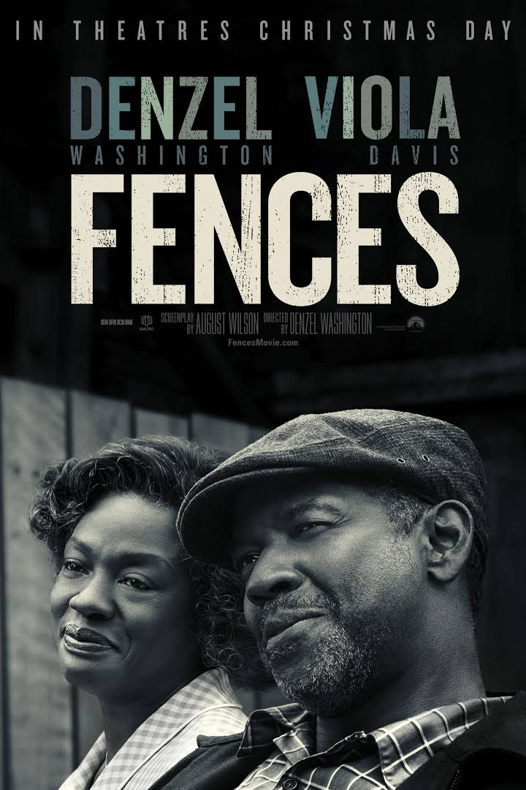
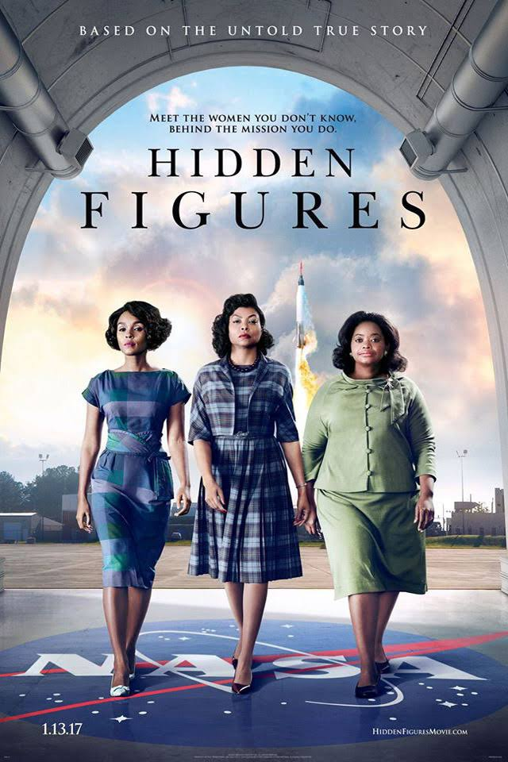

Arrival
When mysterious spacecrafts touch down across the globe, an elite team - lead by expert linguist Louise Banks - is brought together to investigate. As mankind teeters on the verge of global war, Banks and the team race against time for answers - and to find them, she will take a chance that could threaten her life, and quite possibly humanity.
Watch the trailer here

Fences
Fences is the story of Troy Maxson, a mid-century Pittsburgh sanitation worker who once dreamed of a baseball career, but was too old when the major leagues began admitting black players. He tries to be a good husband and father, but his lost dream of glory eats at him, and causes him to make a decision that threatens to tear his family apart.
Watch the trailer here
Hacksaw Ridge
The extraordinary true story of conscientious objector Desmond T. Doss who saved 75 men in Okinawa, during the bloodiest battle of WWII, without firing a single shot. Believing that the war was just but killing was nevertheless wrong, he was the only American soldier in WWII to fight on the front lines without a weapon. As an army medic Doss single-handedly evacuated the wounded near enemy lines - braving enemy fire and putting his own life on the line. He was the first conscientious objector to ever win the Congressional Medal of Honor.
Watch the trailer here
Hell or High Water
Two brothers -- Toby, a straight-living, divorced father trying to make a better life for his son; and Tanner, a short-tempered ex-con with a loose trigger finger -- come together to rob branch after branch of the bank that is foreclosing on their family land. The hold-ups are part of a last-ditch scheme to take back a future that powerful forces beyond their control have stolen from under their feet. Vengeance seems to be theirs until they find themselves in the crosshairs of a relentless, foul-mouthed Texas Ranger looking for one last triumph on the eve of his retirement. As the brothers plot a final bank heist to complete their plan, a showdown looms at the crossroads where the last honest law man and a pair of brothers with nothing to live for except family collide.
Watch the trailer here

Hidden Figures
The incredible untold story of Katherine G. Johnson, Dorothy Vaughan and Mary Jackson - brilliant African-American women working at NASA, who served as the brains behind one of the greatest operations in history: the launch of astronaut John Glenn into orbit, a stunning achievement that restored the nation's confidence, turned around the Space Race, and galvanized the world. The visionary trio crossed all gender and race lines to inspire generations to dream big.
Watch the trailer here

La La Land
The story of Mia, an aspiring actress, and Sebastian, a dedicated jazz musician, struggling to make ends meet while pursuing their dreams in a city known for destroying hopes and breaking hearts. With modern day Los Angeles as the backdrop, this musical about everyday life explores what is more important: a once-in-a-lifetime love or the spotlight.
Watch the trailer here
Lion
Five year old Saroo gets lost on a train which takes him thousands of miles across India, away from home and family. Saroo must learn to survive alone in Kolkata, before ultimately being adopted by an Australian couple. Twenty five years later, armed with only a handful of memories, his unwavering determination, and a revolutionary technology known as Google Earth, he sets out to find his lost family and finally return to his first home.
Watch the trailer here
Manchester by the Sea
Lee Chandler is a brooding, irritable loner who works as a handyman for a Boston apartment block. One damp winter day he gets a call summoning him to his hometown, north of the city. His brother's heart has given out suddenly, and he's been named guardian to his 16-year-old nephew. As if losing his only sibling and doubts about raising a teenager weren't enough, his return to the past re-opens an unspeakable tragedy.
Watch the trailer here

Moonlight
A look at three defining chapters in the life of Chiron, a young black man growing up in Miami. His epic journey to manhood is guided by the kindness, support and love of the community that helps raise him.
Watch the trailer here
| Movie |
Sales |
Total nominations |
| Arrival |
$100 million |
8 |
| Fences |
$55.6 million |
4 |
| Hacksaw Ridge |
$40 million |
6 |
| Hell or High Water |
$27 million |
4 |
| Hidden Figures |
$169.1 million |
3 |
| La La Land |
$341.1 million |
14 |
| Lion |
$76.3 million |
6 |
| Manchester by the Sea |
$60.7 million |
6 |
| Moonlight |
$22.3 million |
8 |